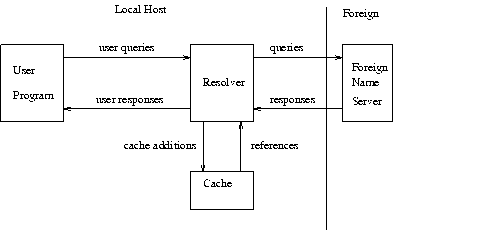
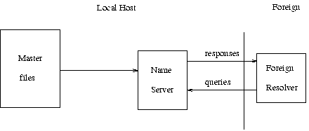
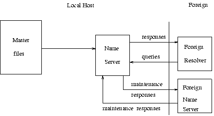
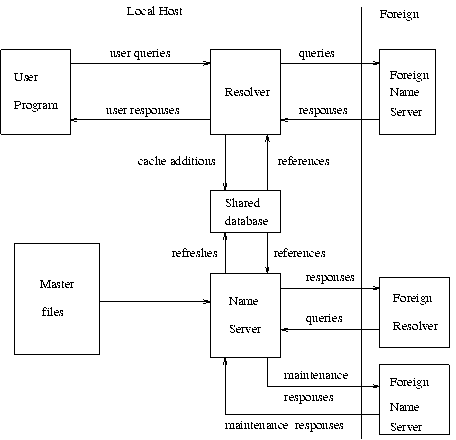
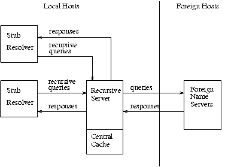

This document, however
beautiful you may find it, however much easier it is to read on the web
than the plain-ASCII
RFC1035.TXT, should
not be regarded as authoritative. I believe that every word in RFC1035.TXT
has been included
without change, but have not verified this fact. Since I HTMLized it
by hand using Emacs on a
Linux
box, I might have deleted
a word or letter by accident. The figures were done with xfig (again,
by hand, but it seems possible to write a script to insert
some things), and converted to .gifs by rendering PostScript and using
Ghostscript to render
to .gif. The .fig files are available
from http://www.crynwr.com/crynwr/rfc1035/
as gif-file-name.fig. - Russell
Nelson
Crynwr home page
rfc1035
Press here
to go to the top of the rfc 'tree'.
Network Working Group P. Mockapetris
Request for Comments: 1035
ISI
November 1987
Obsoletes: RFCs 882, 883, 973
DOMAIN NAMES - IMPLEMENTATION AND SPECIFICATION
1. STATUS OF THIS MEMO
This RFC describes the details of the domain system and protocol, and assumes
that the reader is familiar with the concepts discussed in a companion
RFC, "Domain Names - Concepts and Facilities" [RFC-1034].
The domain system is a mixture of functions and data types which are
an official protocol and functions and data types which are still experimental.
Since the domain system is intentionally extensible, new data types and
experimental behavior should always be expected in parts of the system
beyond the official protocol. The official protocol parts include standard
queries, responses and the Internet class RR data formats (e.g., host addresses).
Since the previous RFC set, several definitions have changed, so some previous
definitions are obsolete.
Experimental or obsolete features are clearly marked in these
RFCs, and such information should be used with caution.
The reader is especially cautioned not to depend on the values
which appear in examples to be current or complete, since their purpose
is primarily pedagogical. Distribution of this memo is unlimited.
Table of Contents
2. INTRODUCTION
2.1. Overview
The goal of domain names is to provide a mechanism for naming resources
in such a way that the names are usable in different hosts, networks, protocol
families, internets, and administrative organizations.
From the user's point of view, domain names are useful as arguments
to a local agent, called a resolver, which retrieves information associated
with the domain name. Thus a user might ask for the host address or mail
information associated with a particular domain name. To enable the user
to request a particular type of information, an appropriate query type
is passed to the resolver with the domain name. To the user, the domain
tree is a single information space; the resolver is responsible for hiding
the distribution of data among name servers from the user.
From the resolver's point of view, the database that makes up
the domain space is distributed among various name servers. Different parts
of the domain space are stored in different name servers, although a particular
data item will be stored redundantly in two or more name servers. The resolver
starts with knowledge of at least one name server. When the resolver processes
a user query it asks a known name server for the information; in return,
the resolver either receives the desired information or a referral to another
name server. Using these referrals, resolvers learn the identities and
contents of other name servers. Resolvers are responsible for dealing with
the distribution of the domain space and dealing with the effects of name
server failure by consulting redundant databases in other servers.
Name servers manage two kinds of data. The first kind of data
held in sets called zones; each zone is the complete database for a particular
"pruned" subtree of the domain space. This data is called authoritative.
A name server periodically checks to make sure that its zones are up to
date, and if not, obtains a new copy of updated zones from master files
stored locally or in another name server. The second kind of data is cached
data which was acquired by a local resolver. This data may be incomplete,
but improves the performance of the retrieval process when non-local data
is repeatedly accessed. Cached data is eventually discarded by a timeout
mechanism.
This functional structure isolates the problems of user interface,
failure recovery, and distribution in the resolvers and isolates the database
update and refresh problems in the name servers.
2.2. Common configurations
A host can participate in the domain name system in a number of ways, depending
on whether the host runs programs that retrieve information from the domain
system, name servers that answer queries from other hosts, or various combinations
of both functions. The simplest, and perhaps most typical, configuration
is shown below:

User programs interact with the domain name space through resolvers;
the format of user queries and user responses is specific to the host and
its operating system. User queries will typically be operating system calls,
and the resolver and its cache will be part of the host operating system.
Less capable hosts may choose to implement the resolver as a subroutine
to be linked in with every program that needs its services. Resolvers answer
user queries with information they acquire via queries to foreign name
servers and the local cache.
Note that the resolver may have to make several queries to several
different foreign name servers to answer a particular user query, and hence
the resolution of a user query may involve several network accesses and
an arbitrary amount of time. The queries to foreign name servers and the
corresponding responses have a standard format described in this memo,
and may be datagrams.
Depending on its capabilities, a name server could be a stand
alone program on a dedicated machine or a process or processes on a large
timeshared host. A simple configuration might be:

Here a primary name server acquires information about one or more zones
by reading master files from its local file system, and answers queries
about those zones that arrive from foreign resolvers.
The DNS requires that all zones be redundantly supported by more
than one name server. Designated secondary servers can acquire zones and
check for updates from the primary server using the zone transfer protocol
of the DNS. This configuration is shown below:

In this configuration, the name server periodically establishes a virtual
circuit to a foreign name server to acquire a copy of a zone or to check
that an existing copy has not changed. The messages sent for these maintenance
activities follow the same form as queries and responses, but the message
sequences are somewhat different.
The information flow in a host that supports all aspects of the
domain name system is shown below:

The shared database holds domain space data for the local name server
and resolver. The contents of the shared database will typically be a mixture
of authoritative data maintained by the periodic refresh operations of
the name server and cached data from previous resolver requests. The structure
of the domain data and the necessity for synchronization between name servers
and resolvers imply the general characteristics of this database, but the
actual format is up to the local implementor.
Information flow can also be tailored so that a group of hosts
act together to optimize activities. Sometimes this is done to offload
less capable hosts so that they do not have to implement a full resolver.
This can be appropriate for PCs or hosts which want to minimize the amount
of new network code which is required. This scheme can also allow a group
of hosts can share a small number of caches rather than maintaining a large
number of separate caches, on the premise that the centralized caches will
have a higher hit ratio. In either case, resolvers are replaced with stub
resolvers which act as front ends to resolvers located in a recursive server
in one or more name servers known to perform that service:

In any case, note that domain components are always replicated for reliability
whenever possible.
2.3. Conventions
The domain system has several conventions dealing with low-level, but fundamental,
issues. While the implementor is free to violate these conventions WITHIN
HIS OWN SYSTEM, he must observe these conventions in ALL behavior observed
from other hosts.
2.3.1. Preferred name syntax
The DNS specifications attempt to be as general as possible in the rules
for constructing domain names. The idea is that the name of any existing
object can be expressed as a domain name with minimal changes.
However, when assigning a domain name for an object, the prudent
user will select a name which satisfies both the rules of the domain system
and any existing rules for the object, whether these rules are published
or implied by existing programs.
For example, when naming a mail domain, the user should satisfy
both the rules of this memo and those in RFC-822.
When creating a new host name, the old rules for HOSTS.TXT should be followed.
This avoids problems when old software is converted to use domain names.
The following syntax will result in fewer problems with many applications
that use domain names (e.g., mail, TELNET).
-
<domain> ::= <subdomain> | " "
-
<subdomain> ::= <label> | <subdomain> "." <label>
-
<label> ::= <letter> [ [ <ldh-str> ] <let-dig> ]
-
<ldh-str> ::= <let-dig-hyp> | <let-dig-hyp> <ldh-str>
-
<let-dig-hyp> ::= <let-dig> | "-"
-
<let-dig> ::= <letter> | <digit>
-
<letter> ::= any one of the 52 alphabetic characters A through Z in
upper case and a through z in lower case
-
<digit> ::= any one of the ten digits 0 through 9
Note that while upper and lower case letters are allowed in domain names,
no significance is attached to the case. That is, two names with the same
spelling but different case are to be treated as if identical.
The labels must follow the rules for ARPANET host names. They
must start with a letter, end with a letter or digit, and have as interior
characters only letters, digits, and hyphen. There are also some restrictions
on the length. Labels must be 63 characters or less.
For example, the following strings identify hosts in the Internet:
A.ISI.EDU XX.LCS.MIT.EDU SRI-NIC.ARPA
2.3.2. Data Transmission Order
The order of transmission of the header and data described in this document
is resolved to the octet level. Whenever a diagram shows a group of octets,
the order of transmission of those octets is the normal order in which
they are read in English. For example, in the following diagram, the octets
are transmitted in the order they are numbered.
| 0 |
1 |
2 |
3 |
4 |
5 |
6 |
7 |
8 |
9 |
10 |
11 |
12 |
13 |
14 |
15 |
| 1 |
2 |
| 3 |
4 |
| 5 |
6 |
Whenever an octet represents a numeric quantity, the left most bit in the
diagram is the high order or most significant bit. That is, the bit labeled
0 is the most significant bit. For example, the following diagram represents
the value 170 (decimal).
| 0 |
1 |
2 |
3 |
4 |
5 |
6 |
7 |
| 1 |
0 |
1 |
0 |
1 |
0 |
1 |
0 |
Similarly, whenever a multi-octet field represents a numeric quantity the
left most bit of the whole field is the most significant bit. When a multi-octet
quantity is transmitted the most significant octet is transmitted first.
2.3.3. Character Case
For all parts of the DNS that are part of the official protocol, all comparisons
between character strings (e.g., labels, domain names, etc.) are done in
a case-insensitive manner. At present, this rule is in force throughout
the domain system without exception. However, future additions beyond current
usage may need to use the full binary octet capabilities in names, so attempts
to store domain names in 7-bit ASCII or use of special bytes to terminate
labels, etc., should be avoided.
When data enters the domain system, its original case should be preserved
whenever possible. In certain circumstances this cannot be done. For example,
if two RRs are stored in a database, one at x.y and one at X.Y, they are
actually stored at the same place in the database, and hence only one casing
would be preserved. The basic rule is that case can be discarded only when
data is used to define structure in a database, and two names are identical
when compared in a case insensitive manner.
Loss of case sensitive data must be minimized. Thus while data for x.y
and X.Y may both be stored under a single location x.y or X.Y, data for
a.x and B.X would never be stored under A.x, A.X, b.x, or b.X. In general,
this preserves the case of the first label of a domain name, but forces
standardization of interior node labels.
Systems administrators who enter data into the domain database should
take care to represent the data they supply to the domain system in a case-consistent
manner if their system is case-sensitive. The data distribution system
in the domain system will ensure that consistent representations are preserved.
2.3.4. Size limits
Various objects and parameters in the DNS have size limits. They are listed
below. Some could be easily changed, others are more fundamental.
-
labels
-
63 octets or less
-
names
-
255 octets or less
-
TTL
-
positive values of a signed 32 bit number.
-
UDP messages
-
512 octets or less
3. DOMAIN NAME SPACE AND RR DEFINITIONS
3.1. Name space definitions
Domain names in messages are expressed in terms of a sequence of labels.
Each label is represented as a one octet length field followed by that
number of octets. Since every domain name ends with the null label of the
root, a domain name is terminated by a length byte of zero. The high order
two bits of every length octet must be zero, and the remaining six bits
of the length field limit the label to 63 octets or less.
To simplify implementations, the total length of a domain name (i.e.,
label octets and label length octets) is restricted to 255 octets or less.
Although labels can contain any 8 bit values in octets that make up
a label, it is strongly recommended that labels follow the preferred syntax
described elsewhere in this memo, which is compatible with existing host
naming conventions. Name servers and resolvers must compare labels in a
case-insensitive manner (i.e., A=a), assuming ASCII with zero parity. Non-alphabetic
codes must match exactly.
3.2. RR definitions
3.2.1. Format
All RRs have the same top level format shown below:
| 0 |
1 |
2 |
3 |
4 |
5 |
6 |
7 |
8 |
9 |
10 |
11 |
12 |
13 |
14 |
15 |
| NAME |
| TYPE |
| CLASS |
| TTL |
| TTL |
| RDLENGTH |
| RDATA |
where:
-
NAME
-
an owner name, i.e., the name of the node to which this resource record
pertains.
-
TYPE
-
two octets containing one of the RR TYPE codes.
-
CLASS
-
two octets containing one of the RR CLASS codes.
-
TTL
-
a 32 bit signed integer that specifies the time interval that the resource
record may be cached before the source of the information should again
be consulted. Zero values are interpreted to mean that the RR can only
be used for the transaction in progress, and should not be cached. For
example, SOA records are always distributed with a zero TTL to prohibit
caching. Zero values can also be used for extremely volatile data.
-
RDLENGTH
-
an unsigned 16 bit integer that specifies the length in octets of the RDATA
field.
-
RDATA
-
a variable length string of octets that describes the resource. The format
of this information varies according to the TYPE
and CLASS of the resource record.
3.2.2. TYPE values
TYPE fields are used in resource records. Note that these types are a subset
of QTYPEs.
-
A
-
1 a host address
-
NS
-
2 an authoritative name server
-
MD
-
3 a mail destination (Obsolete - use MX)
-
MF
-
4 a mail forwarder (Obsolete - use MX)
-
CNAME
-
5 the canonical name for an alias
-
SOA
-
6 marks the start of a zone of authority
-
MB
-
7 a mailbox domain name (EXPERIMENTAL)
-
MG
-
8 a mail group member (EXPERIMENTAL)
-
MR
-
9 a mail rename domain name (EXPERIMENTAL)
-
NULL
-
10 a null RR (EXPERIMENTAL)
-
WKS
-
11 a well known service description
-
PTR
-
12 a domain name pointer
-
HINFO
-
13 host information
-
MINFO
-
14 mailbox or mail list information
-
MX
-
15 mail exchange
-
TXT
-
16 text strings
3.2.3. QTYPE values
QTYPE fields appear in the question part of a query. QTYPES are a superset
of TYPEs, hence all TYPEs are valid QTYPEs. In addition,
the following QTYPEs are defined:
-
AXFR
-
252 A request for a transfer of an entire zone
-
MAILB
-
253 A request for mailbox-related records (MB, MG or MR)
-
MAILA
-
254 A request for mail agent RRs (Obsolete - see MX)
-
*
-
255 A request for all records
3.2.4. CLASS values
CLASS fields appear in resource records. The following CLASS mnemonics
and values are defined:
-
IN
-
1 the Internet
-
CS
-
2 the CSNET class (Obsolete - used only for examples in some obsolete RFCs)
-
CH
-
3 the CHAOS class
-
HS
-
4 Hesiod [Dyer 87]
3.2.5. QCLASS values
QCLASS fields appear in the question section of a query. QCLASS values
are a superset of CLASS values; every CLASS is a
valid QCLASS. In addition to CLASS values, the following QCLASSes are defined:
-
*
-
255 any class
3.3. Standard RRs
The following RR definitions are expected to occur, at least potentially,
in all classes. In particular, NS, SOA, CNAME, and PTR will be used in
all classes, and have the same format in all classes. Because their RDATA
format is known, all domain names in the RDATA section of these RRs may
be compressed.
domain-name is a domain name represented as a series of labels,
and terminated by a label with zero length. character-string is
a single length octet followed by that number of characters. character-string
is treated as binary information, and can be up to 256 characters in length
(including the length octet).
3.3.1. CNAME RDATA format
| 0 |
1 |
2 |
3 |
4 |
5 |
6 |
7 |
8 |
9 |
10 |
11 |
12 |
13 |
14 |
15 |
| CNAMe |
where:
-
CNAME
-
A domain-name which specifies the canonical or primary name for
the owner. The owner name is an alias.
CNAME RRs cause no additional section processing, but name servers may
choose to restart the query at the canonical name in certain cases. See
the description of name server logic in [RFC-1034]
for details.
3.3.2. HINFO RDATA format
| 0 |
1 |
2 |
3 |
4 |
5 |
6 |
7 |
8 |
9 |
10 |
11 |
12 |
13 |
14 |
15 |
| CPU |
| OS |
where:
-
CPU
-
A character-string which specifies the CPU type.
-
OS
-
A character-string which specifies the operating system type.
Standard values for CPU and OS can be found in [RFC-1010].
HINFO records are used to acquire general information about a host.
The main use is for protocols such as FTP that can use special procedures
when talking between machines or operating systems of the same type.
3.3.3. MB RDATA format (EXPERIMENTAL)
| 0 |
1 |
2 |
3 |
4 |
5 |
6 |
7 |
8 |
9 |
10 |
11 |
12 |
13 |
14 |
15 |
| MADNAME |
where:
-
MADNAME
-
A domain-name which specifies a host which has the specified mailbox.
MB records cause additional section processing which looks up an A type
RRs corresponding to MADNAME.
3.3.4. MD RDATA format (Obsolete)
| 0 |
1 |
2 |
3 |
4 |
5 |
6 |
7 |
8 |
9 |
10 |
11 |
12 |
13 |
14 |
15 |
| MADNAME |
where:
-
MADNAME
-
A domain-name which specifies a host which has a mail agent for
the domain which should be able to deliver mail for the domain.
MD records cause additional section processing which looks up an A type
record corresponding to MADNAME.
MD is obsolete. See the definition of MX and [RFC-974]
for details of the new scheme. The recommended policy for dealing with
MD RRs found in a master file is to reject them, or to convert them to
MX RRs with a preference of 0.
3.3.5. MF RDATA format (Obsolete)
| 0 |
1 |
2 |
3 |
4 |
5 |
6 |
7 |
8 |
9 |
10 |
11 |
12 |
13 |
14 |
15 |
| MADNAME |
where:
-
MADNAME
-
A domain-name which specifies a host which has a mail agent for
the domain which will accept mail for forwarding to the domain.
MF records cause additional section processing which looks up an A type
record corresponding to MADNAME.
MF is obsolete. See the definition of MX and [RFC-974]
for details ofw the new scheme. The recommended policy for dealing with
MD RRs found in a master file is to reject them, or to convert them to
MX RRs with a preference of 10.
3.3.6. MG RDATA format (EXPERIMENTAL)
| 0 |
1 |
2 |
3 |
4 |
5 |
6 |
7 |
8 |
9 |
10 |
11 |
12 |
13 |
14 |
15 |
| MGMNAME |
where:
-
MGMNAME
-
A domain-name which specifies a mailbox which is a member of the
mail group specified by the domain name.
MG records cause no additional section processing.
3.3.7. MINFO RDATA format (EXPERIMENTAL)
where:
-
RMAILBX
-
A domain-name which specifies a mailbox which is responsible for
the mailing list or mailbox. If this domain name names the root, the owner
of the MINFO RR is responsible for itself. Note that many existing mailing
lists use a mailbox X-request for the RMAILBX field of mailing list X,
e.g., Msgroup-request for Msgroup. This field provides a more general mechanism.
-
EMAILBX
-
A domain-name which specifies a mailbox which is to receive error
messages related to the mailing list or mailbox specified by the owner
of the MINFO RR (similar to the ERRORS-TO: field which has been proposed).
If this domain name names the root, errors should be returned to the sender
of the message.
MINFO records cause no additional section processing. Although these records
can be associated with a simple mailbox, they are usually used with a mailing
list.
3.3.8. MR RDATA format (EXPERIMENTAL)
| 0 |
1 |
2 |
3 |
4 |
5 |
6 |
7 |
8 |
9 |
10 |
11 |
12 |
13 |
14 |
15 |
| NEWNAME |
where:
-
NEWNAME
-
A domain-name which specifies a mailbox which is the proper rename
of the specified mailbox.
MR records cause no additional section processing. The main use for MR
is as a forwarding entry for a user who has moved to a different mailbox.
3.3.9. MX RDATA format
| 0 |
1 |
2 |
3 |
4 |
5 |
6 |
7 |
8 |
9 |
10 |
11 |
12 |
13 |
14 |
15 |
| PREFERENCE |
| EXCHANGE |
where:
-
PREFERENCE
-
A 16 bit integer which specifies the preference given to this RR among
others at the same owner. Lower values are preferred.
-
EXCHANGE
-
A domain-name which specifies a host willing to act as a mail exchange
for the owner name.
MX records cause type A additional section processing for the host specified
by EXCHANGE. The use of MX RRs is explained in detail in [RFC-974].
3.3.10. NULL RDATA format (EXPERIMENTAL)
| 0 |
1 |
2 |
3 |
4 |
5 |
6 |
7 |
8 |
9 |
10 |
11 |
12 |
13 |
14 |
15 |
| <anything> |
Anything at all may be in the RDATA field so long as it is 65535 octets
or less. NULL records cause no additional section processing. NULL RRs
are not allowed in master files. NULLs are used as placeholders in some
experimental extensions of the DNS.
3.3.11. NS RDATA format
| 0 |
1 |
2 |
3 |
4 |
5 |
6 |
7 |
8 |
9 |
10 |
11 |
12 |
13 |
14 |
15 |
| NSDNAME |
where:
-
NSDNAME
-
A domain-name which specifies a host which should be authoritative
for the specified class and domain.
NS records cause both the usual additional section processing to locate
a type A record, and, when used in a referral, a special search of the
zone in which they reside for glue information.
The NS RR states that the named host should be expected to have a zone
starting at owner name of the specified class. Note that the class may
not indicate the protocol family which should be used to communicate with
the host, although it is typically a strong hint. For example, hosts which
are name servers for either Internet (IN) or Hesiod (HS) class information
are normally queried using IN class protocols.
3.3.12. PTR RDATA format
| 0 |
1 |
2 |
3 |
4 |
5 |
6 |
7 |
8 |
9 |
10 |
11 |
12 |
13 |
14 |
15 |
| PTRDNAME |
where:
-
PTRDNAME
-
A domain-name which points to some location in the domain name space.
PTR records cause no additional section processing. These RRs are used
in special domains to point to some other location in the domain space.
These records are simple data, and don't imply any special processing similar
to that performed by CNAME, which identifies aliases. See the description
of the IN-ADDR.ARPA domain for an example.
3.3.13. SOA RDATA format
| 0 |
1 |
2 |
3 |
4 |
5 |
6 |
7 |
8 |
9 |
10 |
11 |
12 |
13 |
14 |
15 |
| MNAME |
| RNAME |
| SERIAL |
| SERIAL |
| REFRESH |
| REFRESH |
| RETRY |
| RETRY |
| EXPIRE |
| EXPIRE |
| MINIMUM |
| MINIMUM |
where:
-
MNAME
-
The domain-name of the name server that was the original or primary
source of data for this zone.
-
RNAME
-
A domain-name which specifies the mailbox of the person responsible
for this zone.
-
SERIAL
-
The unsigned 32 bit version number of the original copy of the zone. Zone
transfers preserve this value. This value wraps and should be compared
using sequence space arithmetic.
-
REFRESH
-
A 32 bit time interval before the zone should be refreshed.
-
RETRY
-
A 32 bit time interval that should elapse before a failed refresh should
be retried.
-
EXPIRE
-
A 32 bit time value that specifies the upper limit on the time interval
that can elapse before the zone is no longer authoritative.
-
MINIMUM
-
The unsigned 32 bit minimum TTL field that should be exported with any
RR from this zone.
SOA records cause no additional section processing.
All times are in units of seconds.
Most of these fields are pertinent only for name server maintenance
operations. However, MINIMUM is used in all query operations that retrieve
RRs from a zone. Whenever a RR is sent in a response to a query, the TTL
field is set to the maximum of the TTL field from the RR and the MINIMUM
field in the appropriate SOA. Thus MINIMUM is a lower bound on the TTL
field for all RRs in a zone. Note that this use of MINIMUM should occur
when the RRs are copied into the response and not when the zone is loaded
from a master file or via a zone transfer. The reason for this provison
is to allow future dynamic update facilities to change the SOA RR with
known semantics.
3.3.14. TXT RDATA format
| 0 |
1 |
2 |
3 |
4 |
5 |
6 |
7 |
8 |
9 |
10 |
11 |
12 |
13 |
14 |
15 |
| TXT-DATA |
where:
-
TXT-DATA
-
One or more character-strings.
TXT RRs are used to hold descriptive text. The semantics of the text depends
on the domain where it is found.
3.4. Internet specific RRs
3.4.1. A RDATA format
| 0 |
1 |
2 |
3 |
4 |
5 |
6 |
7 |
8 |
9 |
10 |
11 |
12 |
13 |
14 |
15 |
| ADDRESS |
| ADDRESS |
where:
-
ADDRESS
-
A 32 bit Internet address.
Hosts that have multiple Internet addresses will have multiple A records.
A records cause no additional section processing. The RDATA section
of an A line in a master file is an Internet address expressed as four
decimal numbers separated by dots without any imbedded spaces (e.g., "10.2.0.52"
or "192.0.5.6").
3.4.2. WKS RDATA format
| 0 |
1 |
2 |
3 |
4 |
5 |
6 |
7 |
8 |
9 |
10 |
11 |
12 |
13 |
14 |
15 |
| ADDRESS |
| PROTOCOL |
<BIT MAP> |
| <BIT MAP> |
where:
-
ADDRESS
-
An 32 bit Internet address
-
PROTOCOL
-
An 8 bit IP protocol number
-
<BIT MAP>
-
A variable length bit map. The bit map must be a multiple of 8 bits long.
The WKS record is used to describe the well known services supported by
a particular protocol on a particular internet address. The PROTOCOL field
specifies an IP protocol number, and the bit map has one bit per port of
the specified protocol. The first bit corresponds to port 0, the second
to port 1, etc. If the bit map does not include a bit for a protocol of
interest, that bit is assumed zero. The appropriate values and mnemonics
for ports and protocols are specified in [RFC-1010].
For example, if PROTOCOL=TCP (6), the 26th bit corresponds to TCP port
25 (SMTP). If this bit is set, a SMTP server should be listening on TCP
port 25; if zero, SMTP service is not supported on the specified address.
The purpose of WKS RRs is to provide availability information for servers
for TCP and UDP. If a server supports both TCP and UDP, or has multiple
Internet addresses, then multiple WKS RRs are used.
WKS RRs cause no additional section processing.
In master files, both ports and protocols are expressed using mnemonics
or decimal numbers.
3.5. IN-ADDR.ARPA domain
The Internet uses a special domain to support gateway location and Internet
address to host mapping. Other classes may employ a similar strategy in
other domains. The intent of this domain is to provide a guaranteed method
to perform host address to host name mapping, and to facilitate queries
to locate all gateways on a particular network in the Internet.
Note that both of these services are similar to functions that could
be performed by inverse queries; the difference is that this part of the
domain name space is structured according to address, and hence can guarantee
that the appropriate data can be located without an exhaustive search of
the domain space.
The domain begins at IN-ADDR.ARPA and has a substructure which follows
the Internet addressing structure.
Domain names in the IN-ADDR.ARPA domain are defined to have up to four
labels in addition to the IN-ADDR.ARPA suffix. Each label represents one
octet of an Internet address, and is expressed as a character string for
a decimal value in the range 0-255 (with leading zeros omitted except in
the case of a zero octet which is represented by a single zero).
Host addresses are represented by domain names that have all four labels
specified. Thus data for Internet address 10.2.0.52 is located at domain
name 52.0.2.10.IN-ADDR.ARPA. The reversal, though awkward to read, allows
zones to be delegated which are exactly one network of address space. For
example, 10.IN-ADDR.ARPA can be a zone containing data for the ARPANET,
while 26.IN-ADDR.ARPA can be a separate zone for MILNET. Address nodes
are used to hold pointers to primary host names in the normal domain space.
Network numbers correspond to some non-terminal nodes at various depths
in the IN-ADDR.ARPA domain, since Internet network numbers are either 1,
2, or 3 octets. Network nodes are used to hold pointers to the primary
host names of gateways attached to that network. Since a gateway is, by
definition, on more than one network, it will typically have two or more
network nodes which point at it. Gateways will also have host level pointers
at their fully qualified addresses.
Both the gateway pointers at network nodes and the normal host pointers
at full address nodes use the PTR RR to point back to the primary domain
names of the corresponding hosts.
For example, the IN-ADDR.ARPA domain will contain information about
the ISI gateway between net 10 and 26, an MIT gateway from net 10 to MIT's
net 18, and hosts A.ISI.EDU and MULTICS.MIT.EDU. Assuming that ISI gateway
has addresses 10.2.0.22 and 26.0.0.103, and a name MILNET- GW.ISI.EDU,
and the MIT gateway has addresses 10.0.0.77 and 18.10.0.4 and a name GW.LCS.MIT.EDU,
the domain database would contain:
| 10.IN-ADDR.ARPA. |
PTR MILNET-GW.ISI.EDU. |
| 10.IN-ADDR.ARPA. |
PTR GW.LCS.MIT.EDU. |
| 18.IN-ADDR.ARPA. |
PTR GW.LCS.MIT.EDU. |
| 26.IN-ADDR.ARPA. |
PTR MILNET-GW.ISI.EDU. |
| 22.0.2.10.IN-ADDR.ARPA. |
PTR MILNET-GW.ISI.EDU. |
| 103.0.0.26.IN-ADDR.ARPA. |
PTR MILNET-GW.ISI.EDU. |
| 77.0.0.10.IN-ADDR.ARPA. |
PTR GW.LCS.MIT.EDU. |
| 4.0.10.18.IN-ADDR.ARPA. |
PTR GW.LCS.MIT.EDU. |
| 103.0.3.26.IN-ADDR.ARPA. |
PTR A.ISI.EDU. |
| 6.0.0.10.IN-ADDR.ARPA. |
PTR MULTICS.MIT.EDU. |
Thus a program which wanted to locate gateways on net 10 would originate
a query of the form QTYPE=PTR, QCLASS=IN,
QNAME=10.IN-ADDR.ARPA. It would receive two RRs in
response:
| 10.IN-ADDR.ARPA. |
PTR MILNET-GW.ISI.EDU. |
| 10.IN-ADDR.ARPA. |
PTR GW.LCS.MIT.EDU. |
The program could then originate QTYPE=A, QCLASS=IN
queries for MILNET- GW.ISI.EDU. and GW.LCS.MIT.EDU. to discover the Internet
addresses of these gateways.
A resolver which wanted to find the host name corresponding to Internet
host address 10.0.0.6 would pursue a query of the form QTYPE=PTR,
QCLASS=IN, QNAME=6.0.0.10.IN-ADDR.ARPA,
and would receive:
| 6.0.0.10.IN-ADDR.ARPA. |
PTR MULTICS.MIT.EDU. |
Several cautions apply to the use of these services:
-
Since the IN-ADDR.ARPA special domain and the normal domain for a particular
host or gateway will be in different zones, the possibility exists that
that the data may be inconsistent.
-
Gateways will often have two names in separate domains, only one of which
can be primary.
-
Systems that use the domain database to initialize their routing tables
must start with enough gateway information to guarantee that they can access
the appropriate name server.
-
The gateway data only reflects the existence of a gateway in a manner equivalent
to the current HOSTS.TXT file. It doesn't replace the dynamic availability
information from GGP or EGP.
3.6. Defining new types, classes, and special namespaces
The previously defined types and classes are the ones in use as of the
date of this memo. New definitions should be expected. This section makes
some recommendations to designers considering additions to the existing
facilities. The mailing list NAMEDROPPERS@SRI-NIC.ARPA is the forum where
general discussion of design issues takes place.
In general, a new type is appropriate when new information is to be
added to the database about an existing object, or we need new data formats
for some totally new object. Designers should attempt to define types and
their RDATA formats that are generally applicable to all classes, and which
avoid duplication of information. New classes are appropriate when the
DNS is to be used for a new protocol, etc which requires new class-specific
data formats, or when a copy of the existing name space is desired, but
a separate management domain is necessary.
New types and classes need mnemonics for master files; the format of
the master files requires that the mnemonics for type and class be disjoint.
TYPE and CLASS values must
be a proper subset of QTYPEs and QCLASSes
respectively.
The present system uses multiple RRs to represent multiple values of
a type rather than storing multiple values in the RDATA section of a single
RR. This is less efficient for most applications, but does keep RRs shorter.
The multiple RRs assumption is incorporated in some experimental work on
dynamic update methods.
The present system attempts to minimize the duplication of data in the
database in order to insure consistency. Thus, in order to find the address
of the host for a mail exchange, you map the mail domain name to a host
name, then the host name to addresses, rather than a direct mapping to
host address. This approach is preferred because it avoids the opportunity
for inconsistency.
In defining a new type of data, multiple RR types should not be used
to create an ordering between entries or express different formats for
equivalent bindings, instead this information should be carried in the
body of the RR and a single type used. This policy avoids problems with
caching multiple types and defining QTYPEs to match
multiple types.
For example, the original form of mail exchange binding used two RR
types one to represent a "closer" exchange (MD) and one to represent a
"less close" exchange (MF). The difficulty is that the presence of one
RR type in a cache doesn't convey any information about the other because
the query which acquired the cached information might have used a QTYPE
of MF, MD, or MAILA (which matched both). The redesigned service used a
single type (MX) with a "preference" value in the RDATA section which can
order different RRs. However, if any MX RRs are found in the cache, then
all should be there.
4. MESSAGES
4.1. Format
All communications inside of the domain protocol are carried in a single
format called a message. The top level format of message is divided into
5 sections (some of which are empty in certain cases) shown below:
| Header |
| Question |
the question for the name server |
| Answer |
RRs answering the question |
| Authority |
RRs pointing toward an authority |
| Additional |
RRs holding additional information |
The header section is always present. The header includes fields that specify
which of the remaining sections are present, and also specify whether the
message is a query or a response, a standard query or some other opcode,
etc.
The names of the sections after the header are derived from their use
in standard queries. The question section contains fields that describe
a question to a name server. These fields are a query type (QTYPE),
a query class (QCLASS), and a query domain name (QNAME).
The last three sections have the same format: a possibly empty list of
concatenated resource records (RRs). The answer section contains RRs that
answer the question; the authority section contains RRs that point toward
an authoritative name server; the additional records section contains RRs
which relate to the query, but are not strictly answers for the question.
4.1.1. Header section format
The header contains the following fields:
| 0 |
1 |
2 |
3 |
4 |
5 |
6 |
7 |
8 |
9 |
10 |
11 |
12 |
13 |
14 |
15 |
| ID |
| QR |
Opcode |
AA |
TC |
RD |
RA |
Z |
RCODE |
| QDCOUNT |
| ANCOUNT |
| NSCOUNT |
| ARCOUNT |
where:
-
ID
-
A 16 bit identifier assigned by the program that generates any kind of
query. This identifier is copied the corresponding reply and can be used
by the requester to match up replies to outstanding queries.
-
QR
-
A one bit field that specifies whether this message is a query (0), or
a response (1).
-
OPCODE
-
A four bit field that specifies kind of query in this message. This value
is set by the originator of a query and copied into the response. The values
are:
-
0
-
a standard query (QUERY)
-
1
-
an inverse query (IQUERY)
-
2
-
a server status request (STATUS)
-
3-15
-
reserved for future use
-
AA
-
Authoritative Answer - this bit is valid in responses, and specifies that
the responding name server is an authority for the domain name in question
section.
Note that the contents of the answer section may have multiple owner
names because of aliases. The AA bit corresponds to the name which matches
the query name, or the first owner name in the answer section.
-
TC
-
TrunCation - specifies that this message was truncated due to length greater
than that permitted on the transmission channel.
-
RD
-
Recursion Desired - this bit may be set in a query and is copied into the
response. If RD is set, it directs the name server to pursue the query
recursively. Recursive query support is optional.
-
RA
-
Recursion Available - this be is set or cleared in a response, and denotes
whether recursive query support is available in the name server.
-
Z
-
Reserved for future use. Must be zero in all queries and responses.
-
RCODE
-
Response code - this 4 bit field is set as part of responses. The values
have the following interpretation:
-
0
-
No error condition
-
1
-
Format error - The name server was unable to interpret the query.
-
2
-
Server failure - The name server was unable to process this query due to
a problem with the name server.
-
3
-
Name Error - Meaningful only for responses from an authoritative name server,
this code signifies that the domain name referenced in the query does not
exist.
-
4
-
Not Implemented - The name server does not support the requested kind of
query.
-
5
-
Refused - The name server refuses to perform the specified operation for
policy reasons. For example, a name server may not wish to provide the
information to the particular requester, or a name server may not wish
to perform a particular operation (e.g., zone transfer) for particular
data.
-
6-15
-
Reserved for future use.
-
QDCOUNT
-
an unsigned 16 bit integer specifying the number of entries in the question
section.
-
ANCOUNT
-
an unsigned 16 bit integer specifying the number of resource records in
the answer section.
-
NSCOUNT
-
an unsigned 16 bit integer specifying the number of name server resource
records in the authority records section.
-
ARCOUNT
-
an unsigned 16 bit integer specifying the number of resource records in
the additional records section.
4.1.2. Question section format
The question section is used to carry the "question" in most queries, i.e.,
the parameters that define what is being asked. The section contains QDCOUNT
(usually 1) entries, each of the following format:
where:
-
QNAME
-
a domain-name represented as a sequence of labels, where each label
consists of a length octet followed by that number of octets. The domain
name terminates with the zero length octet for the null label of the root.
Note that this field may be an odd number of octets; no padding is used.
-
QTYPE
-
a two octet code which specifies the type of the query. The values for
this field include all codes valid for a TYPE field, together with some
more general codes which can match more than one TYPE
of RR.
-
QCLASS
-
a two octet code that specifies the class of the query. For example, the
QCLASS field is IN for the Internet.
4.1.3. Resource record format
The answer, authority, and additional sections all share the same format:
a variable number of resource records, where the number of records is specified
in the corresponding count field in the header. Each resource record has
the following format:
| 0 |
1 |
2 |
3 |
4 |
5 |
6 |
7 |
8 |
9 |
10 |
11 |
12 |
13 |
14 |
15 |
| NAME |
| TYPE |
| CLASS |
| TTL |
| RDLENGTH |
| RDATA |
where:
-
NAME
-
A domain-name to which this resource record pertains.
-
TYPE
-
two octets containing one of the RR type codes. This field specifies the
meaning of the data in the RDATA field.
-
CLASS
-
two octets which specify the class of the data in the RDATA field.
-
TTL
-
a 32 bit unsigned integer that specifies the time interval (in seconds)
that the resource record may be cached before it should be discarded. Zero
values are interpreted to mean that the RR can only be used for the transaction
in progress, and should not be cached.
-
RDLENGTH
-
an unsigned 16 bit integer that specifies the length in octets of the RDATA
field.
-
RDATA
-
a variable length string of octets that describes the resource. The format
of this information varies according to the TYPE
and CLASS of the resource record. For example, the
if the TYPE is A and the CLASS
is IN, the RDATA field is a 4 octet ARPA Internet address.
4.1.4. Message compression
In order to reduce the size of messages, the domain system utilizes a compression
scheme which eliminates the repetition of domain names in a message. In
this scheme, an entire domain name or a list of labels at the end of a
domain name is replaced with a pointer to a prior occurance of the same
name. The pointer takes the form of a two octet sequence:
| 0 |
1 |
2 |
3 |
4 |
5 |
6 |
7 |
8 |
9 |
10 |
11 |
12 |
13 |
14 |
15 |
| 1 |
1 |
OFFSET |
The first two bits are ones. This allows a pointer to be distinguished
from a label, since the label must begin with two zero bits because labels
are restricted to 63 octets or less. (The 10 and 01 combinations are reserved
for future use.) The OFFSET field specifies an offset from the start of
the message (i.e., the first octet of the ID field in the domain header).
A zero offset specifies the first byte of the ID field, etc.
The compression scheme allows a domain name in a message to be represented
as either:
-
a sequence of labels ending in a zero octet
-
a pointer
-
a sequence of labels ending with a pointer
Pointers can only be used for occurances of a domain name where the format
is not class specific. If this were not the case, a name server or resolver
would be required to know the format of all RRs it handled. As yet, there
are no such cases, but they may occur in future RDATA formats.
If a domain name is contained in a part of the message subject to a
length field (such as the RDATA section of an RR), and compression is used,
the length of the compressed name is used in the length calculation, rather
than the length of the expanded name.
Programs are free to avoid using pointers in messages they generate,
although this will reduce datagram capacity, and may cause truncation.
However all programs are required to understand arriving messages that
contain pointers.
For example, a datagram might need to use the domain names F.ISI.ARPA,
FOO.F.ISI.ARPA, ARPA, and the root. Ignoring the other fields of the message,
these domain names might be represented as:
|
0 |
1 |
2 |
3 |
4 |
5 |
6 |
7 |
8 |
9 |
10 |
11 |
12 |
13 |
14 |
15 |
| 20 |
1 |
F |
| 22 |
3 |
I |
| 24 |
S |
I |
| 26 |
4 |
A |
| 28 |
R |
P |
| 30 |
A |
0 |
| 40 |
3 |
F |
| 42 |
O |
O |
| 44 |
1 |
1 |
20 |
| 64 |
1 |
1 |
26 |
| 92 |
0 |
The domain-name for F.ISI.ARPA is shown at offset 20. The domain
name FOO.F.ISI.ARPA is shown at offset 40; this definition uses a pointer
to concatenate a label for FOO to the previously defined F.ISI.ARPA. The
domain name ARPA is defined at offset 64 using a pointer to the ARPA component
of the name F.ISI.ARPA at 20; note that this pointer relies on ARPA being
the last label in the string at 20. The root domain name is defined by
a single octet of zeros at 92; the root domain name has no labels.
4.2. Transport
The DNS assumes that messages will be transmitted as datagrams or in a
byte stream carried by a virtual circuit. While virtual circuits can be
used for any DNS activity, datagrams are preferred for queries due to their
lower overhead and better performance. Zone refresh activities must use
virtual circuits because of the need for reliable transfer.
The Internet supports name server access using TCP [RFC-793]
on server port 53 (decimal) as well as datagram access using UDP [RFC-768]
on UDP port 53 (decimal).
4.2.1. UDP usage
Messages sent using UDP user server port 53 (decimal). Messages carried
by UDP are restricted to 512 bytes (not counting the IP or UDP headers).
Longer messages are truncated and the TC bit is set in the header. UDP
is not acceptable for zone transfers, but is the recommended method for
standard queries in the Internet. Queries sent using UDP may be lost, and
hence a retransmission strategy is required. Queries or their responses
may be reordered by the network, or by processing in name servers, so resolvers
should not depend on them being returned in order. The optimal UDP retransmission
policy will vary with performance of the Internet and the needs of the
client, but the following are recommended:
-
The client should try other servers and server addresses before repeating
a query to a specific address of a server.
-
The retransmission interval should be based on prior statistics if possible.
Too aggressive retransmission can easily slow responses for the community
at large. Depending on how well connected the client is to its expected
servers, the minimum retransmission interval should be 2-5 seconds.
More suggestions on server selection and retransmission policy can be found
in the resolver section of this memo.
4.2.2. TCP usage
Messages sent over TCP connections use server port 53 (decimal). The message
is prefixed with a two byte length field which gives the message length,
excluding the two byte length field. This length field allows the low-level
processing to assemble a complete message before beginning to parse it.
Several connection management policies are recommended:
-
The server should not block other activities waiting for TCP data.
-
The server should support multiple connections.
-
The server should assume that the client will initiate connection closing,
and should delay closing its end of the connection until all outstanding
client requests have been satisfied.
-
If the server needs to close a dormant connection to reclaim resources,
it should wait until the connection has been idle for a period on the order
of two minutes. In particular, the server should allow the SOA and AXFR
request sequence (which begins a refresh operation) to be made on a single
connection. Since the server would be unable to answer queries anyway,
a unilateral close or reset may be used instead of a graceful close.
5. MASTER FILES
Master files are text files that contain RRs in text form. Since the contents
of a zone can be expressed in the form of a list of RRs a master file is
most often used to define a zone, though it can be used to list a cache's
contents. Hence, this section first discusses the format of RRs in a master
file, and then the special considerations when a master file is used to
create a zone in some name server.
5.1. Format
The format of these files is a sequence of entries. Entries are predominantly
line-oriented, though parentheses can be used to continue a list of items
across a line boundary, and text literals can contain CRLF within the text.
Any combination of tabs and spaces act as a delimiter between the separate
items that make up an entry. The end of any line in the master file can
end with a comment. The comment starts with a ";" (semicolon). The following
entries are defined:
-
<blank>[<comment>]
-
$ORIGIN domain-name [<comment>]
-
$INCLUDE <file-name> [domain-name] [<comment>]
-
domain-name<rr> [<comment>]
-
<blank><rr> [<comment>]
Blank lines, with or without comments, are allowed anywhere in the file.
Two control entries are defined: $ORIGIN and $INCLUDE. $ORIGIN is followed
by a domain name, and resets the current origin for relative domain names
to the stated name. $INCLUDE inserts the named file into the current file,
and may optionally specify a domain name that sets the relative domain
name origin for the included file. $INCLUDE may also have a comment. Note
that a $INCLUDE entry never changes the relative origin of the parent file,
regardless of changes to the relative origin made within the included file.
The last two forms represent RRs. If an entry for an RR begins with
a blank, then the RR is assumed to be owned by the last stated owner. If
an RR entry begins with a domain-name, then the owner name is reset.
<rr> contents take one of the following forms:
-
[<TTL>] [<class>] <type> <RDATA>
-
[<class>] [<TTL>] <type> <RDATA>
The RR begins with optional TTL and class fields, followed by a type and
RDATA field appropriate to the type and class. Class and type use the standard
mnemonics, TTL is a decimal integer. Omitted class and TTL values are default
to the last explicitly stated values. Since type and class mnemonics are
disjoint, the parse is unique. (Note that this order is different from
the order used in examples and the order used in the actual RRs; the given
order allows easier parsing and defaulting.)
domain-names make up a large share of the data in the master
file. The labels in the domain name are expressed as character strings
and separated by dots. Quoting conventions allow arbitrary characters to
be stored in domain names. Domain names that end in a dot are called absolute,
and are taken as complete. Domain names which do not end in a dot are called
relative; the actual domain name is the concatenation of the relative part
with an origin specified in a $ORIGIN, $INCLUDE, or as an argument to the
master file loading routine. A relative name is an error when no origin
is available.
character-string is expressed in one or two ways: as a contiguous
set of characters without interior spaces, or as a string beginning with
a " and ending with a ". Inside a " delimited string any character can
occur, except for a " itself, which must be quoted using \ (back slash).
Because these files are text files several special encodings are necessary
to allow arbitrary data to be loaded. In particular:
-
of the root.
-
@
-
A free standing @ is used to denote the current origin.
-
\X
-
where X is any character other than a digit (0-9), is used to quote that
character so that its special meaning does not apply. For example, "\."
can be used to place a dot character in a label.
-
\DDD
-
where each D is a digit is the octet corresponding to the decimal number
described by DDD. The resulting octet is assumed to be text and is not
checked for special meaning.
-
( )
-
Parentheses are used to group data that crosses a line boundary. In effect,
line terminations are not recognized within parentheses.
-
;
-
Semicolon is used to start a comment; the remainder of the line is ignored.
5.2. Use of master files to define zones
When a master file is used to load a zone, the operation should be suppressed
if any errors are encountered in the master file. The rationale for this
is that a single error can have widespread consequences. For example, suppose
that the RRs defining a delegation have syntax errors; then the server
will return authoritative name errors for all names in the subzone (except
in the case where the subzone is also present on the server).
Several other validity checks that should be performed in addition to
insuring that the file is syntactically correct:
-
All RRs in the file should have the same CLASS.
-
Exactly one SOA RR should be present at the top of the zone.
-
If delegations are present and glue information is required, it should
be present.
-
Information present outside of the authoritative nodes in the zone should
be glue information, rather than the result of an origin or similar error.
5.3. Master file example
The following is an example file which might be used to define the ISI.EDU
zone.and is loaded with an origin of ISI.EDU:
@ IN SOA VENERA Action\.domains (
20 ; SERIAL
7200 ; REFRESH
600 ; RETRY
3600000; EXPIRE
60) ; MINIMUM
NS A.ISI.EDU.
NS VENERA
NS VAXA
MX 10 VENERA
MX 20 VAXA
A A 26.3.0.103
VENERA A 10.1.0.52
A 128.9.0.32
VAXA A 10.2.0.27
A 128.9.0.33
$INCLUDE <SUBSYS>ISI-MAILBOXES.TXT
Where the file <SUBSYS>ISI-MAILBOXES.TXT is:
MOE MB A.ISI.EDU.
LARRY MB A.ISI.EDU.
CURLEY MB A.ISI.EDU.
STOOGES MG MOE
MG LARRY
MG CURLEY
Note the use of the \ character in the SOA RR to specify the responsible
person mailbox "Action.domains@E.ISI.EDU".
6. NAME SERVER IMPLEMENTATION
6.1. Architecture
The optimal structure for the name server will depend on the host operating
system and whether the name server is integrated with resolver operations,
either by supporting recursive service, or by sharing its database with
a resolver. This section discusses implementation considerations for a
name server which shares a database with a resolver, but most of these
concerns are present in any name server.
6.1.1. Control
A name server must employ multiple concurrent activities, whether they
are implemented as separate tasks in the host's OS or multiplexing inside
a single name server program. It is simply not acceptable for a name server
to block the service of UDP requests while it waits for TCP data for refreshing
or query activities. Similarly, a name server should not attempt to provide
recursive service without processing such requests in parallel, though
it may choose to serialize requests from a single client, or to regard
identical requests from the same client as duplicates. A name server should
not substantially delay requests while it reloads a zone from master files
or while it incorporates a newly refreshed zone into its database.
6.1.2. Database
While name server implementations are free to use any internal data structures
they choose, the suggested structure consists of three major parts:
-
A "catalog" data structure which lists the zones available to this server,
and a "pointer" to the zone data structure. The main purpose of this structure
is to find the nearest ancestor zone, if any, for arriving standard queries.
-
Separate data structures for each of the zones held by the name server.
-
A data structure for cached data. (or perhaps separate caches for different
classes)
All of these data structures can be implemented an identical tree structure
format, with different data chained off the nodes in different parts: in
the catalog the data is pointers to zones, while in the zone and cache
data structures, the data will be RRs. In designing the tree framework
the designer should recognize that query processing will need to traverse
the tree using case-insensitive label comparisons; and that in real data,
a few nodes have a very high branching factor (100-1000 or more), but the
vast majority have a very low branching factor (0-1).
One way to solve the case problem is to store the labels for each node
in two pieces: a standardized-case representation of the label where all
ASCII characters are in a single case, together with a bit mask that denotes
which characters are actually of a different case. The branching factor
diversity can be handled using a simple linked list for a node until the
branching factor exceeds some threshold, and transitioning to a hash structure
after the threshold is exceeded. In any case, hash structures used to store
tree sections must insure that hash functions and procedures preserve the
casing conventions of the DNS.
The use of separate structures for the different parts of the database
is motivated by several factors:
-
The catalog structure can be an almost static structure that need change
only when the system administrator changes the zones supported by the server.
This structure can also be used to store parameters used to control refreshing
activities.
-
The individual data structures for zones allow a zone to be replaced simply
by changing a pointer in the catalog. Zone refresh operations can build
a new structure and, when complete, splice it into the database via a simple
pointer replacement. It is very important that when a zone is refreshed,
queries should not use old and new data simultaneously.
-
With the proper search procedures, authoritative data in zones will always
"hide", and hence take precedence over, cached data.
-
Errors in zone definitions that cause overlapping zones, etc., may cause
erroneous responses to queries, but problem determination is simplified,
and the contents of one "bad" zone can't corrupt another.
-
Since the cache is most frequently updated, it is most vulnerable to corruption
during system restarts. It can also become full of expired RR data. In
either case, it can easily be discarded without disturbing zone data.
A major aspect of database design is selecting a structure which allows
the name server to deal with crashes of the name server's host. State information
which a name server should save across system crashes includes the catalog
structure (including the state of refreshing for each zone) and the zone
data itself.
6.1.3. Time
Both the TTL data for RRs and the timing data for refreshing activities
depends on 32 bit timers in units of seconds. Inside the database, refresh
timers and TTLs for cached data conceptually "count down", while data in
the zone stays with constant TTLs.
A recommended implementation strategy is to store time in two ways:
as a relative increment and as an absolute time. One way to do this is
to use positive 32 bit numbers for one type and negative numbers for the
other. The RRs in zones use relative times; the refresh timers and cache
data use absolute times. Absolute numbers are taken with respect to some
known origin and converted to relative values when placed in the response
to a query. When an absolute TTL is negative after conversion to relative,
then the data is expired and should be ignored.
6.2. Standard query processing
The major algorithm for standard query processing is presented in [RFC-1034].
When processing queries with QCLASS=*, or some
other QCLASS which matches multiple classes, the response should never
be authoritative unless the server can guarantee that the response covers
all classes.
When composing a response, RRs which are to be inserted in the additional
section, but duplicate RRs in the answer or authority sections, may be
omitted from the additional section.
When a response is so long that truncation is required, the truncation
should start at the end of the response and work forward in the datagram.
Thus if there is any data for the authority section, the answer section
is guaranteed to be unique.
The MINIMUM value in the SOA should be used to set a floor on the TTL
of data distributed from a zone. This floor function should be done when
the data is copied into a response. This will allow future dynamic update
protocols to change the SOA MINIMUM field without ambiguous semantics.
6.3. Zone refresh and reload processing
In spite of a server's best efforts, it may be unable to load zone data
from a master file due to syntax errors, etc., or be unable to refresh
a zone within the its expiration parameter. In this case, the name server
should answer queries as if it were not supposed to possess the zone.
If a master is sending a zone out via AXFR, and a new version is created
during the transfer, the master should continue to send the old version
if possible. In any case, it should never send part of one version and
part of another. If completion is not possible, the master should reset
the connection on which the zone transfer is taking place.
6.4. Inverse queries (Optional)
Inverse queries are an optional part of the DNS. Name servers are not required
to support any form of inverse queries. If a name server receives an inverse
query that it does not support, it returns an error response with the "Not
Implemented" error set in the header. While inverse query support is optional,
all name servers must be at least able to return the error response.
6.4.1. The contents of inverse queries and responses
Inverse queries reverse the mappings performed by standard query operations;
while a standard query maps a domain name to a resource, an inverse query
maps a resource to a domain name. For example, a standard query might bind
a domain name to a host address; the corresponding inverse query binds
the host address to a domain name.
Inverse queries take the form of a single RR in the answer section of
the message, with an empty question section. The owner name of the query
RR and its TTL are not significant. The response carries questions in the
question section which identify all names possessing the query RR WHICH
THE NAME SERVER KNOWS. Since no name server knows about all of the domain
name space, the response can never be assumed to be complete. Thus inverse
queries are primarily useful for database management and debugging activities.
Inverse queries are NOT an acceptable method of mapping host addresses
to host names; use the IN- ADDR.ARPA domain instead.
Where possible, name servers should provide case-insensitive comparisons
for inverse queries. Thus an inverse query asking for an MX RR of "Venera.isi.edu"
should get the same response as a query for "VENERA.ISI.EDU"; an inverse
query for HINFO RR "IBM-PC UNIX" should produce the same result as an inverse
query for "IBM-pc unix". However, this cannot be guaranteed because name
servers may possess RRs that contain character strings but the name server
does not know that the data is character.
When a name server processes an inverse query, it either returns:
-
zero, one, or multiple domain names for the specified resource as QNAMEs
in the question section
-
an error code indicating that the name server doesn't support inverse mapping
of the specified resource type.
When the response to an inverse query contains one or more QNAMEs, the
owner name and TTL of the RR in the answer section which defines the inverse
query is modified to exactly match an RR found at the first QNAME.
RRs returned in the inverse queries cannot be cached using the same
mechanism as is used for the replies to standard queries. One reason for
this is that a name might have multiple RRs of the same type, and only
one would appear. For example, an inverse query for a single address of
a multiply homed host might create the impression that only one address
existed.
6.4.2. Inverse query and response example
The overall structure of an inverse query for retrieving the domain name
that corresponds to Internet address 10.1.0.52 is shown below:
| Header |
OPCODE=IQUERY, ID=997 |
| Question |
<empty> |
| Answer |
<anyname> A IN 10.1.0.52 |
| Authority |
<empty> |
| Additional |
<empty> |
This query asks for a question whose answer is the Internet style address
10.1.0.52. Since the owner name is not known, any domain name can be used
as a placeholder (and is ignored). A single octet of zero, signifying the
root, is usually used because it minimizes the length of the message. The
TTL of the RR is not significant. The response to this query might be:
| Header |
OPCODE=RESPONSE, ID=997 |
| Question |
QTYPE=A, QCLASS=IN, QNAME=VENERA.ISI.EDU |
| Answer |
VENERA.ISI.EDU A IN 10.1.0.52 |
| Authority |
<empty> |
| Additional |
<empty> |
Note that the QTYPE in a response to an inverse query
is the same as the TYPE field in the answer section of the inverse query.
Responses to inverse queries may contain multiple questions when the inverse
is not unique. If the question section in the response is not empty, then
the RR in the answer section is modified to correspond to be an exact copy
of an RR at the first QNAME.
6.4.3. Inverse query processing
Name servers that support inverse queries can support these operations
through exhaustive searches of their databases, but this becomes impractical
as the size of the database increases. An alternative approach is to invert
the database according to the search key.
For name servers that support multiple zones and a large amount of data,
the recommended approach is separate inversions for each zone. When a particular
zone is changed during a refresh, only its inversions need to be redone.
Support for transfer of this TYPE of inversion
may be included in future versions of the domain system, but is not supported
in this version.
6.5. Completion queries and responses
The optional completion services described in RFC-882
and RFC-883
have been deleted. Redesigned services may become available in the future.
7. RESOLVER IMPLEMENTATION
The top levels of the recommended resolver algorithm are discussed in [RFC-1034].
This section discusses implementation details assuming the database structure
suggested in the name server implementation section of this memo.
7.1. Transforming a user request into a query
The first step a resolver takes is to transform the client's request, stated
in a format suitable to the local OS, into a search specification for RRs
at a specific name which match a specific QTYPE and
QCLASS. Where possible, the QTYPE and QCLASS should
correspond to a single type and a single class, because this makes the
use of cached data much simpler. The reason for this is that the presence
of data of one type in a cache doesn't confirm the existence or non-existence
of data of other types, hence the only way to be sure is to consult an
authoritative source. If QCLASS=* is used, then authoritative answers won't
be available.
Since a resolver must be able to multiplex multiple requests if it is
to perform its function efficiently, each pending request is usually represented
in some block of state information. This state block will typically contain:
-
A timestamp indicating the time the request began. The timestamp is used
to decide whether RRs in the database can be used or are out of date. This
timestamp uses the absolute time format previously discussed for RR storage
in zones and caches. Note that when an RRs TTL indicates a relative time,
the RR must be timely, since it is part of a zone. When the RR has an absolute
time, it is part of a cache, and the TTL of the RR is compared against
the timestamp for the start of the request.
Note that using the timestamp is superior to using a current time, since
it allows RRs with TTLs of zero to be entered in the cache in the usual
manner, but still used by the current request, even after intervals of
many seconds due to system load, query retransmission timeouts, etc.
-
Some sort of parameters to limit the amount of work which will be performed
for this request.
The amount of work which a resolver will do in response to a client
request must be limited to guard against errors in the database, such as
circular CNAME references, and operational problems, such as network partition
which prevents the resolver from accessing the name servers it needs. While
local limits on the number of times a resolver will retransmit a particular
query to a particular name server address are essential, the resolver should
have a global per-request counter to limit work on a single request. The
counter should be set to some initial value and decremented whenever the
resolver performs any action (retransmission timeout, retransmission, etc.)
If the counter passes zero, the request is terminated with a temporary
error.
Note that if the resolver structure allows one request to start others
in parallel, such as when the need to access a name server for one request
causes a parallel resolve for the name server's addresses, the spawned
request should be started with a lower counter. This prevents circular
references in the database from starting a chain reaction of resolver activity.
-
The SLIST data structure discussed in [RFC-1034].
This structure keeps track of the state of a request if it must wait
for answers from foreign name servers.
7.2. Sending the queries
As described in [RFC-1034],
the basic task of the resolver is to formulate a query which will answer
the client's request and direct that query to name servers which can provide
the information. The resolver will usually only have very strong hints
about which servers to ask, in the form of NS RRs, and may have to revise
the query, in response to CNAMEs, or revise the set of name servers the
resolver is asking, in response to delegation responses which point the
resolver to name servers closer to the desired information. In addition
to the information requested by the client, the resolver may have to call
upon its own services to determine the address of name servers it wishes
to contact.
In any case, the model used in this memo assumes that the resolver is
multiplexing attention between multiple requests, some from the client,
and some internally generated. Each request is represented by some state
information, and the desired behavior is that the resolver transmit queries
to name servers in a way that maximizes the probability that the request
is answered, minimizes the time that the request takes, and avoids excessive
transmissions. The key algorithm uses the state information of the request
to select the next name server address to query, and also computes a timeout
which will cause the next action should a response not arrive. The next
action will usually be a transmission to some other server, but may be
a temporary error to the client.
The resolver always starts with a list of server names to query (SLIST).
This list will be all NS RRs which correspond to the nearest ancestor zone
that the resolver knows about. To avoid startup problems, the resolver
should have a set of default servers which it will ask should it have no
current NS RRs which are appropriate. The resolver then adds to SLIST all
of the known addresses for the name servers, and may start parallel requests
to acquire the addresses of the servers when the resolver has the name,
but no addresses, for the name servers.
To complete initialization of SLIST, the resolver attaches whatever
history information it has to the each address in SLIST. This will usually
consist of some sort of weighted averages for the response time of the
address, and the batting average of the address (i.e., how often the address
responded at all to the request). Note that this information should be
kept on a per address basis, rather than on a per name server basis, because
the response time and batting average of a particular server may vary considerably
from address to address. Note also that this information is actually specific
to a resolver address / server address pair, so a resolver with multiple
addresses may wish to keep separate histories for each of its addresses.
Part of this step must deal with addresses which have no such history;
in this case an expected round trip time of 5-10 seconds should be the
worst case, with lower estimates for the same local network, etc.
Note that whenever a delegation is followed, the resolver algorithm
reinitializes SLIST.
The information establishes a partial ranking of the available name
server addresses. Each time an address is chosen and the state should be
altered to prevent its selection again until all other addresses have been
tried. The timeout for each transmission should be 50-100% greater than
the average predicted value to allow for variance in response.
Some fine points:
-
The resolver may encounter a situation where no addresses are available
for any of the name servers named in SLIST, and where the servers in the
list are precisely those which would normally be used to look up their
own addresses. This situation typically occurs when the glue address RRs
have a smaller TTL than the NS RRs marking delegation, or when the resolver
caches the result of a NS search. The resolver should detect this condition
and restart the search at the next ancestor zone, or alternatively at the
root.
-
If a resolver gets a server error or other bizarre response from a name
server, it should remove it from SLIST, and may wish to schedule an immediate
transmission to the next candidate server address.
7.3. Processing responses
The first step in processing arriving response datagrams is to parse the
response. This procedure should include:
-
Check the header for reasonableness. Discard datagrams which are queries
when responses are expected.
-
Parse the sections of the message, and insure that all RRs are correctly
formatted.
-
As an optional step, check the TTLs of arriving data looking for RRs with
excessively long TTLs. If a RR has an excessively long TTL, say greater
than 1 week, either discard the whole response, or limit all TTLs in the
response to 1 week.
The next step is to match the response to a current resolver request. The
recommended strategy is to do a preliminary matching using the ID field
in the domain header, and then to verify that the question section corresponds
to the information currently desired. This requires that the transmission
algorithm devote several bits of the domain ID field to a request identifier
of some sort. This step has several fine points:
-
Some name servers send their responses from different addresses than the
one used to receive the query. That is, a resolver cannot rely that a response
will come from the same address which it sent the corresponding query to.
This name server bug is typically encountered in UNIX systems.
-
If the resolver retransmits a particular request to a name server it should
be able to use a response from any of the transmissions. However, if it
is using the response to sample the round trip time to access the name
server, it must be able to determine which transmission matches the response
(and keep transmission times for each outgoing message), or only calculate
round trip times based on initial transmissions.
-
A name server will occasionally not have a current copy of a zone which
it should have according to some NS RRs. The resolver should simply remove
the name server from the current SLIST, and continue.
7.4. Using the cache
In general, we expect a resolver to cache all data which it receives in
responses since it may be useful in answering future client requests. However,
there are several types of data which should not be cached:
-
When several RRs of the same type are available for a particular owner
name, the resolver should either cache them all or none at all. When a
response is truncated, and a resolver doesn't know whether it has a complete
set, it should not cache a possibly partial set of RRs.
-
Cached data should never be used in preference to authoritative data, so
if caching would cause this to happen the data should not be cached.
-
The results of an inverse query should not be cached.
-
The results of standard queries where the QNAME contains
"*" labels if the data might be used to construct wildcards. The reason
is that the cache does not necessarily contain existing RRs or zone boundary
information which is necessary to restrict the application of the wildcard
RRs.
-
RR data in responses of dubious reliability. When a resolver receives unsolicited
responses or RR data other than that requested, it should discard it without
caching it. The basic implication is that all sanity checks on a packet
should be performed before any of it is cached.
In a similar vein, when a resolver has a set of RRs for some name in a
response, and wants to cache the RRs, it should check its cache for already
existing RRs. Depending on the circumstances, either the data in the response
or the cache is preferred, but the two should never be combined. If the
data in the response is from authoritative data in the answer section,
it is always preferred.
8. MAIL SUPPORT
The domain system defines a standard for mapping mailboxes into domain
names, and two methods for using the mailbox information to derive mail
routing information. The first method is called mail exchange binding and
the other method is mailbox binding. The mailbox encoding standard and
mail exchange binding are part of the DNS official protocol, and are the
recommended method for mail routing in the Internet. Mailbox binding is
an experimental feature which is still under development and subject to
change.
The mailbox encoding standard assumes a mailbox name of the form "<local-part>@<mail-domain>".
While the syntax allowed in each of these sections varies substantially
between the various mail internets, the preferred syntax for the ARPA Internet
is given in [RFC-822].
The DNS encodes the <local-part> as a single label, and encodes the
<mail-domain> as a domain name. The single label from the <local-part>
is prefaced to the domain name from <mail-domain> to form the domain
name corresponding to the mailbox. Thus the mailbox HOSTMASTER@SRI- NIC.ARPA
is mapped into the domain name HOSTMASTER.SRI-NIC.ARPA. If the <local-part>
contains dots or other special characters, its representation in a master
file will require the use of backslash quoting to ensure that the domain
name is properly encoded. For example, the mailbox Action.domains@ISI.EDU
would be represented as Action\.domains.ISI.EDU.
8.1. Mail exchange binding
Mail exchange binding uses the <mail-domain> part of a mailbox specification
to determine where mail should be sent. The <local-part> is not even
consulted. [RFC-974]
specifies this method in detail, and should be consulted before attempting
to use mail exchange support.
One of the advantages of this method is that it decouples mail destination
naming from the hosts used to support mail service, at the cost of another
layer of indirection in the lookup function. However, the addition layer
should eliminate the need for complicated "%", "!", etc encodings in <local-part>.
The essence of the method is that the <mail-domain> is used as a
domain name to locate type MX RRs which list hosts willing to accept mail
for <mail-domain>, together with preference values which rank the hosts
according to an order specified by the administrators for <mail-domain>.
In this memo, the <mail-domain> ISI.EDU is used in examples, together
with the hosts VENERA.ISI.EDU and VAXA.ISI.EDU as mail exchanges for ISI.EDU.
If a mailer had a message for Mockapetris@ISI.EDU, it would route it by
looking up MX RRs for ISI.EDU. The MX RRs at ISI.EDU name VENERA.ISI.EDU
and VAXA.ISI.EDU, and type A queries can find the host addresses.
8.2. Mailbox binding (Experimental)
In mailbox binding, the mailer uses the entire mail destination specification
to construct a domain name. The encoded domain name for the mailbox is
used as the QNAME field in a QTYPE=MAILB
query.
Several outcomes are possible for this query:
-
The query can return a name error indicating that the mailbox does not
exist as a domain name.
In the long term, this would indicate that the specified mailbox doesn't
exist. However, until the use of mailbox binding is universal, this error
condition should be interpreted to mean that the organization identified
by the global part does not support mailbox binding. The appropriate procedure
is to revert to exchange binding at this point.
-
The query can return a Mail Rename (MR) RR.
The MR RR carries new mailbox specification in its RDATA field. The
mailer should replace the old mailbox with the new one and retry the operation.
The query can return a MB RR.
The MB RR carries a domain name for a host in its RDATA field. The mailer
should deliver the message to that host via whatever protocol is applicable,
e.g., b,SMTP. The query can return one or more Mail Group (MG) RRs.
This condition means that the mailbox was actually a mailing list or
mail group, rather than a single mailbox. Each MG RR has a RDATA field
that identifies a mailbox that is a member of the group. The mailer should
deliver a copy of the message to each member. The query can return a MB
RR as well as one or more MG RRs.
This condition means the the mailbox was actually a mailing list. The
mailer can either deliver the message to the host specified by the MB RR,
which will in turn do the delivery to all members, or the mailer can use
the MG RRs to do the expansion itself. In any of these cases, the response
may include a Mail Information (MINFO) RR. This RR is usually associated
with a mail group, but is legal with a MB. The MINFO RR identifies two
mailboxes. One of these identifies a responsible person for the original
mailbox name. This mailbox should be used for requests to be added to a
mail group, etc. The second mailbox name in the MINFO RR identifies a mailbox
that should receive error messages for mail failures. This is particularly
appropriate for mailing lists when errors in member names should be reported
to a person other than the one who sends a message to the list.
New fields may be added to this RR in the future.
9. REFERENCES and BIBLIOGRAPHY
[Dyer 87] S. Dyer, F. Hsu, "Hesiod", Project Athena
Technical Plan - Name Service, April 1987, version 1.9.
Describes the fundamentals of the Hesiod name service.
[IEN-116] J. Postel, "Internet Name Server", IEN-116,
USC/Information Sciences Institute, August 1979.
A name service obsoleted by the Domain Name System, but
still in use.
[Quarterman 86] J. Quarterman, and J. Hoskins, "Notable Computer Networks",
Communications of the ACM, October 1986, volume 29, number
10.
[RFC-742] K. Harrenstien, "NAME/FINGER", RFC-742, Network
Information Center, SRI International, December 1977.
[RFC-768] J. Postel, "User Datagram Protocol", RFC-768,
USC/Information Sciences Institute, August 1980.
[RFC-793] J. Postel, "Transmission Control Protocol", RFC-793,
USC/Information Sciences Institute, September 1981.
[RFC-799] D. Mills, "Internet Name Domains", RFC-799, COMSAT,
September 1981.
Suggests introduction of a hierarchy in place of a flat
name space for the Internet.
[RFC-805] J. Postel, "Computer Mail Meeting Notes", RFC-805,
USC/Information Sciences Institute, February 1982.
[RFC-810] E. Feinler, K. Harrenstien, Z. Su, and V. White, "DOD
Internet Host Table Specification", RFC-810, Network
Information Center, SRI International, March 1982.
Obsolete. See RFC-952.
[RFC-811] K. Harrenstien, V. White, and E. Feinler, "Hostnames
Server", RFC-811, Network Information Center, SRI
International, March 1982.
Obsolete. See RFC-953.
[RFC-812] K. Harrenstien, and V. White, "NICNAME/WHOIS", RFC-812,
Network Information Center, SRI International, March
1982.
[RFC-819] Z. Su, and J. Postel, "The Domain Naming Convention for
Internet User Applications", RFC-819, Network
Information Center, SRI International, August 1982.
Early thoughts on the design of the domain system.
Current implementation is completely different.
[RFC-821] J. Postel, "Simple Mail Transfer Protocol", RFC-821,
USC/Information Sciences Institute, August 1980.
[RFC-830] Z. Su, "A Distributed System for Internet Name Service",
RFC-830, Network Information Center, SRI International,
October 1982.
Early thoughts on the design of the domain system.
Current implementation is completely different.
[RFC-882] P. Mockapetris, "Domain names - Concepts and
Facilities," RFC-882, USC/Information Sciences
Institute, November 1983.
Superceeded by this memo.
[RFC-883] P. Mockapetris, "Domain names - Implementation and
Specification," RFC-883, USC/Information Sciences
Institute, November 1983.
Superceeded by this memo.
[RFC-920] J. Postel and J. Reynolds, "Domain Requirements",
RFC-920, USC/Information Sciences Institute,
October 1984.
Explains the naming scheme for top level domains.
[RFC-952] K. Harrenstien, M. Stahl, E. Feinler, "DoD Internet Host
Table Specification", RFC-952, SRI, October 1985.
Specifies the format of HOSTS.TXT, the host/address
table replaced by the DNS.
[RFC-953] K. Harrenstien, M. Stahl, E. Feinler, "HOSTNAME Server",
RFC-953, SRI, October 1985.
This RFC contains the official specification of the
hostname server protocol, which is obsoleted by the DNS.
This TCP based protocol accesses information stored in
the RFC-952 format, and is used to obtain copies of the
host table.
[RFC-973] P. Mockapetris, "Domain System Changes and
Observations", RFC-973, USC/Information Sciences
Institute, January 1986.
Describes changes to RFC-882 and RFC-883 and reasons for
them.
[RFC-974] C. Partridge, "Mail routing and the domain system",
RFC-974, CSNET CIC BBN Labs, January 1986.
Describes the transition from HOSTS.TXT based mail
addressing to the more powerful MX system used with the
domain system.
[RFC-1001] NetBIOS Working Group, "Protocol standard for a NetBIOS
service on a TCP/UDP transport: Concepts and Methods",
RFC-1001, March 1987.
This RFC and RFC-1002 are a preliminary design for
NETBIOS on top of TCP/IP which proposes to base NetBIOS
name service on top of the DNS.
[RFC-1002] NetBIOS Working Group, "Protocol standard for a NetBIOS
service on a TCP/UDP transport: Detailed
Specifications", RFC-1002, March 1987.
[RFC-1010] J. Reynolds, and J. Postel, "Assigned Numbers", RFC-1010,
USC/Information Sciences Institute, May 1987.
Contains socket numbers and mnemonics for host names,
operating systems, etc.
[RFC-1031] W. Lazear, "MILNET Name Domain Transition", RFC-1031,
November 1987.
Describes a plan for converting the MILNET to the DNS.
[RFC-1032] M. Stahl, "Establishing a Domain - Guidelines for
Administrators", RFC-1032, November 1987.
Describes the registration policies used by the NIC to
administer the top level domains and delegate subzones.
[RFC-1033] M. Lottor, "Domain Administrators Operations Guide",
RFC-1033, November 1987.
A cookbook for domain administrators.
[Solomon 82] M. Solomon, L. Landweber, and D. Neuhengen, "The CSNET
Name Server", Computer Networks, vol 6, nr 3, July 1982.
Describes a name service for CSNET which is independent
from the DNS and DNS use in the CSNET.